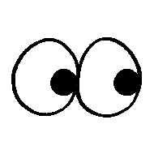
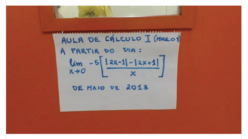

Cursos Prof. Fernando Passold

Dr. Eng. Fernando Passold (Academia.edu, Publons/Web of Science, Research Gate, ORCID, Slideshare, Google Scholar, LinkedIn, Personal YouTube, Institutional YouTube ) - Prof. Eng. Elétrica - Universidade de Passo Fundo
(Where there is artistic excellence, there is human dignity)
Maori proverb
Cursos/Disciplinas ministradas:
| Circuitos Digitais 1(Eletrônica Digital Combinacional - Eng. Elétrica) | Laboratório de Circuitos Digitais 1(Eng. Elétrica) |
|---|---|
| Circuitos Digitais 2(Eletrônica Digital Sequencial - Eng. Elétrica) | Laboratório de Circuitos Digitais 2(Eng. Elétrica) |
| Sinais & Sistemas(Eng. Elétrica) | |
| Controle Automático 1(Introdução à sistemas, modelagem e análise de sistemas - Eng. Elétrica) | |
| Controle Automático 2(Controle Automático Clássico, Analógico - Eng. Elétrica, Eng. Computação) | Laboratório de Controle Automático 1(Lab. Controle Analógico - Eng. Elétrica, Eng. Computação) |
| Controle Automático 3(Controle Digital - Eng. Elétrica) | Laboratório de Controle Automático 2(Lab. Controle Digital - Eng. Elétrica, Eng. Computação (opcional)) |
| Processamento Digital de Sinais(Eng. Elétrica) | Laboratório de Processamento Digital de Sinais(Eng. Elétrica) |
| Processamento de Sinais e Controle Digital(Eng. Computação) | Introdução à Python | Uso do Jupyter | Object Calisthenics & Code Clean |
| Acionamento Hidráulico e Pneumático(Eng. Elétrica) | Intro Redes Neurais  |
Tutorial rápido sobre Matlab ou Matlab_guide.pdf(tutorial mais longo, arquivo PDF de 44 páginas; 13.4 Mbytes);
Instalação recomendada do Matlab (áreas de: Controle E Sinais & Sistemas);
Tutorial do Octave (para a área de Controle);
- Octave on-line → http://octave-online.net/
Dicas para estudantes de TCC (envolve dicas para escrita e dicas sobre ).
Resolvendo este "enigma" (como usar DeepSeek e outras ferramentas para tentar aprender sozinho): 
| 🏠 Fernando Passold 📬 , Página criada em Abril de 2020. Atualizada em 01/08/2025